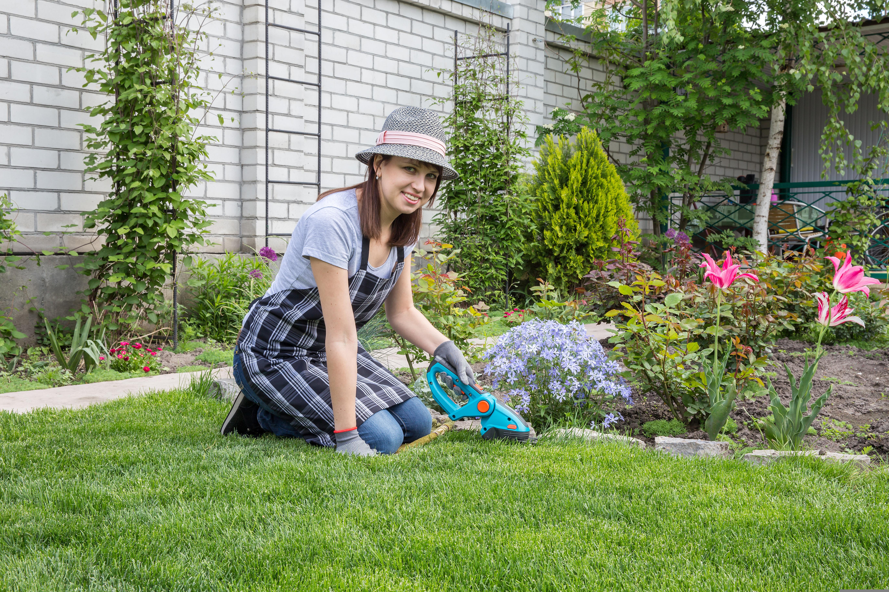

Gartenservice und Außenanlagenpflege in Viersen
Der erste Eindruck beginnt draußen. Wir halten Wege, Höfe, Eingänge und Müllplätze sauber und ordentlich, damit Ihre Immobilie gepflegt wirkt.
Leistungen für saubere Außenbereiche
Der Gartenservice ist als ergänzende Pflege rund um Immobilien gedacht, nicht als schwerer Garten- und Landschaftsbau.
Laub kehren
Regelmäßige Entfernung von Laub auf Wegen, Eingängen und Hofflächen.
Gehwege & Höfe reinigen
Besenreine Flächen für einen gepflegten und sicheren ersten Eindruck.
Unkraut entfernen
Ordnung an Fugen, Kanten und sichtbaren Bereichen nach Absprache.
Eingänge pflegen
Saubere Zugänge, damit Bewohner, Kunden und Gäste sich willkommen fühlen.
Müllplätze reinigen
Mehr Ordnung und Hygiene an Tonnenstellplätzen und angrenzenden Flächen.
Mit Reinigung kombinieren
Außenpflege lässt sich sinnvoll mit Treppenhaus- oder Gebäudereinigung verbinden.

Für Eigentümer, Verwaltungen und Privatkunden
Außenbereiche werden schnell zur Visitenkarte einer Immobilie. Regelmäßige Pflege hilft, Eingänge und Wege ordentlich zu halten und Beschwerden zu reduzieren.
- ✓Regelmäßige Pflege
Sinnvoll für Objekte, bei denen Außenflächen dauerhaft gepflegt aussehen sollen. - ✓Ergänzend zur Reinigung
Besonders passend für Mehrfamilienhäuser und Gewerbeobjekte. - ✓Lokaler Fokus
Schwerpunkt Viersen und direkte Umgebung.
Häufige Fragen zum Gartenservice
Übernimmt Rühl & Rein Gartenbauarbeiten?
Der Schwerpunkt liegt auf Pflege und Sauberkeit rund um Immobilien, zum Beispiel Wege, Eingänge, Laub, Unkraut und Müllplätze.
Kann der Gartenservice regelmäßig stattfinden?
Ja. Der passende Rhythmus hängt von Objekt, Jahreszeit und gewünschtem Umfang ab.
Lässt sich Außenpflege mit Treppenhausreinigung verbinden?
Ja, gerade bei Mehrfamilienhäusern oder Gewerbeobjekten ist eine Kombination oft sinnvoll.
Außenanlagenpflege in Viersen anfragen
Beschreiben Sie kurz Fläche, Ort und gewünschten Umfang. Wir melden uns zur Abstimmung.
Anfrage senden